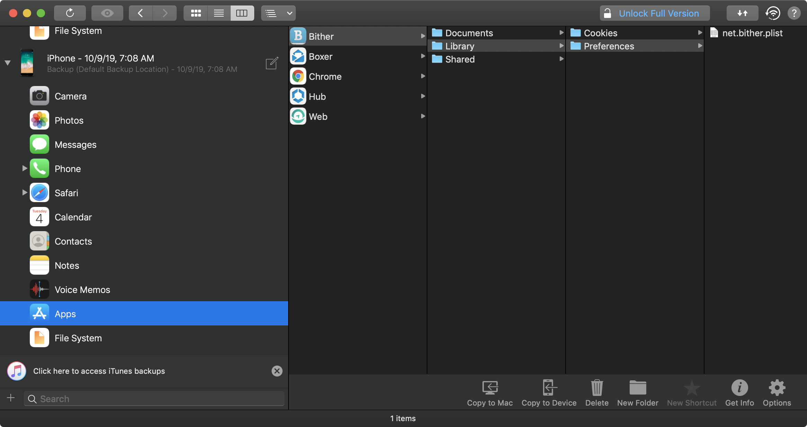

iOS Data Storage¶
The protection of sensitive data, such as authentication tokens and private information, is key for mobile security. In this chapter, you'll learn about the iOS APIs for local data storage, and best practices for using them.
Testing Local Data Storage (MSTG-STORAGE-1 and MSTG-STORAGE-2)¶
As little sensitive data as possible should be saved in permanent local storage. However, in most practical scenarios, at least some user data must be stored. Fortunately, iOS offers secure storage APIs, which allow developers to use the cryptographic hardware available on every iOS device. If these APIs are used correctly, sensitive data and files can be secured via hardware-backed 256-bit AES encryption.
Data Protection API¶
App developers can leverage the iOS Data Protection APIs to implement fine-grained access control for user data stored in flash memory. The APIs are built on top of the Secure Enclave Processor (SEP), which was introduced with the iPhone 5S. The SEP is a coprocessor that provides cryptographic operations for data protection and key management. A device-specific hardware key-the device UID (Unique ID)-is embedded in the secure enclave, ensuring the integrity of data protection even when the operating system kernel is compromised.
The data protection architecture is based on a hierarchy of keys. The UID and the user passcode key (which is derived from the user's passphrase via the PBKDF2 algorithm) sit at the top of this hierarchy. Together, they can be used to "unlock" so-called class keys, which are associated with different device states (e.g., device locked/unlocked).
Every file stored on the iOS file system is encrypted with its own per-file key, which is contained in the file metadata. The metadata is encrypted with the file system key and wrapped with the class key corresponding to the protection class the app selected when creating the file.
The following illustration shows the iOS Data Protection Key Hierarchy.

Files can be assigned to one of four different protection classes, which are explained in more detail in the iOS Security Guide:
-
Complete Protection (NSFileProtectionComplete): A key derived from the user passcode and the device UID protects this class key. The derived key is wiped from memory shortly after the device is locked, making the data inaccessible until the user unlocks the device.
-
Protected Unless Open (NSFileProtectionCompleteUnlessOpen): This protection class is similar to Complete Protection, but, if the file is opened when unlocked, the app can continue to access the file even if the user locks the device. This protection class is used when, for example, a mail attachment is downloading in the background.
-
Protected Until First User Authentication (NSFileProtectionCompleteUntilFirstUserAuthentication): The file can be accessed as soon as the user unlocks the device for the first time after booting. It can be accessed even if the user subsequently locks the device and the class key is not removed from memory.
-
No Protection (NSFileProtectionNone): The key for this protection class is protected with the UID only. The class key is stored in "Effaceable Storage", which is a region of flash memory on the iOS device that allows the storage of small amounts of data. This protection class exists for fast remote wiping (immediate deletion of the class key, which makes the data inaccessible).
All class keys except NSFileProtectionNone are encrypted with a key derived from the device UID and the user's passcode. As a result, decryption can happen only on the device itself and requires the correct passcode.
Since iOS 7, the default data protection class is "Protected Until First User Authentication".
The Keychain¶
The iOS Keychain can be used to securely store short, sensitive bits of data, such as encryption keys and session tokens. It is implemented as an SQLite database that can be accessed through the Keychain APIs only.
On macOS, every user application can create as many Keychains as desired, and every login account has its own Keychain. The structure of the Keychain on iOS is different: only one Keychain is available to all apps. Access to the items can be shared between apps signed by the same developer via the access groups feature of the attribute kSecAttrAccessGroup. Access to the Keychain is managed by the securityd daemon, which grants access according to the app's Keychain-access-groups, application-identifier, and application-group entitlements.
The Keychain API includes the following main operations:
SecItemAddSecItemUpdateSecItemCopyMatchingSecItemDelete
Data stored in the Keychain is protected via a class structure that is similar to the class structure used for file encryption. Items added to the Keychain are encoded as a binary plist and encrypted with a 128-bit AES per-item key in Galois/Counter Mode (GCM). Note that larger blobs of data aren't meant to be saved directly in the Keychain-that's what the Data Protection API is for. You can configure data protection for Keychain items by setting the kSecAttrAccessible key in the call to SecItemAdd or SecItemUpdate. The following configurable accessibility values for kSecAttrAccessible are the Keychain Data Protection classes:
kSecAttrAccessibleAlways: The data in the Keychain item can always be accessed, regardless of whether the device is locked.kSecAttrAccessibleAlwaysThisDeviceOnly: The data in the Keychain item can always be accessed, regardless of whether the device is locked. The data won't be included in an iCloud or local backup.kSecAttrAccessibleAfterFirstUnlock: The data in the Keychain item can't be accessed after a restart until the device has been unlocked once by the user.kSecAttrAccessibleAfterFirstUnlockThisDeviceOnly: The data in the Keychain item can't be accessed after a restart until the device has been unlocked once by the user. Items with this attribute do not migrate to a new device. Thus, after restoring from a backup of a different device, these items will not be present.kSecAttrAccessibleWhenUnlocked: The data in the Keychain item can be accessed only while the device is unlocked by the user.kSecAttrAccessibleWhenUnlockedThisDeviceOnly: The data in the Keychain item can be accessed only while the device is unlocked by the user. The data won't be included in an iCloud or local backup.kSecAttrAccessibleWhenPasscodeSetThisDeviceOnly: The data in the Keychain can be accessed only when the device is unlocked. This protection class is only available if a passcode is set on the device. The data won't be included in an iCloud or local backup.
AccessControlFlags define the mechanisms with which users can authenticate the key (SecAccessControlCreateFlags):
kSecAccessControlDevicePasscode: Access the item via a passcode.kSecAccessControlBiometryAny: Access the item via one of the fingerprints registered to Touch ID. Adding or removing a fingerprint won't invalidate the item.kSecAccessControlBiometryCurrentSet: Access the item via one of the fingerprints registered to Touch ID. Adding or removing a fingerprint will invalidate the item.kSecAccessControlUserPresence: Access the item via either one of the registered fingerprints (using Touch ID) or default to the passcode.
Please note that keys secured by Touch ID (via kSecAccessControlBiometryAny or kSecAccessControlBiometryCurrentSet) are protected by the Secure Enclave: The Keychain holds a token only, not the actual key. The key resides in the Secure Enclave.
Starting with iOS 9, you can do ECC-based signing operations in the Secure Enclave. In that scenario, the private key and the cryptographic operations reside within the Secure Enclave. See the static analysis section for more info on creating the ECC keys.
iOS 9 supports only 256-bit ECC. Furthermore, you need to store the public key in the Keychain because it can't be stored in the Secure Enclave. After the key is created, you can use the kSecAttrKeyType to indicate the type of algorithm you want to use the key with.
In case you want to use these mechanisms, it is recommended to test whether the passcode has been set. In iOS 8, you will need to check whether you can read/write from an item in the Keychain protected by the kSecAttrAccessibleWhenPasscodeSetThisDeviceOnly attribute. From iOS 9 onward you can check whether a lock screen is set, using LAContext:
Swift:
public func devicePasscodeEnabled() -> Bool {
return LAContext().canEvaluatePolicy(.deviceOwnerAuthentication, error: nil)
}
Objective-C:
-(BOOL)devicePasscodeEnabled:(LAContex)context{
if ([context canEvaluatePolicy:LAPolicyDeviceOwnerAuthentication error:nil]) {
return true;
} else {
return false;
}
}
Keychain Data Persistence¶
On iOS, when an application is uninstalled, the Keychain data used by the application is retained by the device, unlike the data stored by the application sandbox which is wiped. In the event that a user sells their device without performing a factory reset, the buyer of the device may be able to gain access to the previous user's application accounts and data by reinstalling the same applications used by the previous user. This would require no technical ability to perform.
When assessing an iOS application, you should look for Keychain data persistence. This is normally done by using the application to generate sample data that may be stored in the Keychain, uninstalling the application, then reinstalling the application to see whether the data was retained between application installations. Use objection runtime mobile exploration toolkit to dump the keychain data. The following objection command demonstrates this procedure:
...itudehacks.DVIAswiftv2.develop on (iPhone: 13.2.3) [usb] # ios keychain dump
Note: You may be asked to authenticate using the devices passcode or TouchID
Save the output by adding `--json keychain.json` to this command
Dumping the iOS keychain...
Created Accessible ACL Type Account Service Data
------------------------- ------------------------------ ----- -------- ------------------------- ------------------------------------------------------------- ------------------------------------
2020-02-11 13:26:52 +0000 WhenUnlocked None Password keychainValue com.highaltitudehacks.DVIAswiftv2.develop mysecretpass123
There's no iOS API that developers can use to force wipe data when an application is uninstalled. Instead, developers should take the following steps to prevent Keychain data from persisting between application installations:
- When an application is first launched after installation, wipe all Keychain data associated with the application. This will prevent a device's second user from accidentally gaining access to the previous user's accounts. The following Swift example is a basic demonstration of this wiping procedure:
let userDefaults = UserDefaults.standard
if userDefaults.bool(forKey: "hasRunBefore") == false {
// Remove Keychain items here
// Update the flag indicator
userDefaults.set(true, forKey: "hasRunBefore")
userDefaults.synchronize() // Forces the app to update UserDefaults
}
- When developing logout functionality for an iOS application, make sure that the Keychain data is wiped as part of account logout. This will allow users to clear their accounts before uninstalling an application.
Static Analysis¶
When you have access to the source code of an iOS app, identify sensitive data that's saved and processed throughout the app. This includes passwords, secret keys, and personally identifiable information (PII), but it may as well include other data identified as sensitive by industry regulations, laws, and company policies. Look for this data being saved via any of the local storage APIs listed below.
Make sure that sensitive data is never stored without appropriate protection. For example, authentication tokens should not be saved in NSUserDefaults without additional encryption. Also avoid storing encryption keys in .plist files, hardcoded as strings in code, or generated using a predictable obfuscation function or key derivation function based on stable attributes.
Sensitive data should be stored by using the Keychain API (that stores them inside the Secure Enclave), or stored encrypted using envelope encryption. Envelope encryption, or key wrapping, is a cryptographic construct that uses symmetric encryption to encapsulate key material. Data encryption keys (DEK) can be encrypted with key encryption keys (KEK) which must be securely stored in the Keychain. Encrypted DEK can be stored in NSUserDefaults or written in files. When required, application reads KEK, then decrypts DEK. Refer to OWASP Cryptographic Storage Cheat Sheet to learn more about encrypting cryptographic keys.
Keychain¶
The encryption must be implemented so that the secret key is stored in the Keychain with secure settings, ideally kSecAttrAccessibleWhenPasscodeSetThisDeviceOnly. This ensures the usage of hardware-backed storage mechanisms. Make sure that the AccessControlFlags are set according to the security policy of the keys in the KeyChain.
Generic examples of using the KeyChain to store, update, and delete data can be found in the official Apple documentation. The official Apple documentation also includes an example of using Touch ID and passcode protected keys.
Here is sample Swift code you can use to create keys (Notice the kSecAttrTokenID as String: kSecAttrTokenIDSecureEnclave: this indicates that we want to use the Secure Enclave directly.):
// private key parameters
let privateKeyParams = [
kSecAttrLabel as String: "privateLabel",
kSecAttrIsPermanent as String: true,
kSecAttrApplicationTag as String: "applicationTag",
] as CFDictionary
// public key parameters
let publicKeyParams = [
kSecAttrLabel as String: "publicLabel",
kSecAttrIsPermanent as String: false,
kSecAttrApplicationTag as String: "applicationTag",
] as CFDictionary
// global parameters
let parameters = [
kSecAttrKeyType as String: kSecAttrKeyTypeEC,
kSecAttrKeySizeInBits as String: 256,
kSecAttrTokenID as String: kSecAttrTokenIDSecureEnclave,
kSecPublicKeyAttrs as String: publicKeyParams,
kSecPrivateKeyAttrs as String: privateKeyParams,
] as CFDictionary
var pubKey, privKey: SecKey?
let status = SecKeyGeneratePair(parameters, &pubKey, &privKey)
if status != errSecSuccess {
// Keys created successfully
}
When checking an iOS app for insecure data storage, consider the following ways to store data because none of them encrypt data by default:
NSUserDefaults¶
The NSUserDefaults class provides a programmatic interface for interacting with the default system. The default system allows an application to customize its behavior according to user preferences. Data saved by NSUserDefaults can be viewed in the application bundle. This class stores data in a plist file, but it's meant to be used with small amounts of data.
File system¶
NSData: creates static data objects, whileNSMutableDatacreates dynamic data objects.NSDataandNSMutableDataare typically used for data storage, but they are also useful for distributed objects applications, in which data contained in data objects can be copied or moved between applications. The following are methods used to writeNSDataobjects:NSDataWritingWithoutOverwritingNSDataWritingFileProtectionNoneNSDataWritingFileProtectionCompleteNSDataWritingFileProtectionCompleteUnlessOpenNSDataWritingFileProtectionCompleteUntilFirstUserAuthenticationwriteToFile: stores data as part of theNSDataclassNSSearchPathForDirectoriesInDomains, NSTemporaryDirectory: used to manage file pathsNSFileManager: lets you examine and change the contents of the file system. You can usecreateFileAtPathto create a file and write to it.
The following example shows how to create a complete encrypted file using the FileManager class. You can find more information in the Apple Developer Documentation "Encrypting Your App’s Files"
Swift:
FileManager.default.createFile(
atPath: filePath,
contents: "secret text".data(using: .utf8),
attributes: [FileAttributeKey.protectionKey: FileProtectionType.complete]
)
Objective-C:
[[NSFileManager defaultManager] createFileAtPath:[self filePath]
contents:[@"secret text" dataUsingEncoding:NSUTF8StringEncoding]
attributes:[NSDictionary dictionaryWithObject:NSFileProtectionComplete
forKey:NSFileProtectionKey]];
CoreData¶
Core Data is a framework for managing the model layer of objects in your application. It provides general and automated solutions to common tasks associated with object life cycles and object graph management, including persistence. Core Data can use SQLite as its persistent store, but the framework itself is not a database.
CoreData does not encrypt it's data by default. As part of a research project (iMAS) from the MITRE Corporation, that was focused on open source iOS security controls, an additional encryption layer can be added to CoreData. See the GitHub Repo for more details.
SQLite Databases¶
The SQLite 3 library must be added to an app if the app is to use SQLite. This library is a C++ wrapper that provides an API for the SQLite commands.
Firebase Real-time Databases¶
Firebase is a development platform with more than 15 products, and one of them is Firebase Real-time Database. It can be leveraged by application developers to store and sync data with a NoSQL cloud-hosted database. The data is stored as JSON and is synchronized in real-time to every connected client and also remains available even when the application goes offline.
A misconfigured Firebase instance can be identified by making the following network call:
https://\<firebaseProjectName\>.firebaseio.com/.json
The firebaseProjectName can be retrieved from the property list(.plist) file. For example, PROJECT_ID key stores the corresponding Firebase project name in GoogleService-Info.plist file.
Alternatively, the analysts can use Firebase Scanner, a python script that automates the task above as shown below:
python FirebaseScanner.py -f <commaSeparatedFirebaseProjectNames>
Realm databases¶
Realm Objective-C and Realm Swift aren't supplied by Apple, but they are still worth noting. They store everything unencrypted, unless the configuration has encryption enabled.
The following example demonstrates how to use encryption with a Realm database:
// Open the encrypted Realm file where getKey() is a method to obtain a key from the Keychain or a server
let config = Realm.Configuration(encryptionKey: getKey())
do {
let realm = try Realm(configuration: config)
// Use the Realm as normal
} catch let error as NSError {
// If the encryption key is wrong, `error` will say that it's an invalid database
fatalError("Error opening realm: \(error)")
}
Couchbase Lite Databases¶
Couchbase Lite is a lightweight, embedded, document-oriented (NoSQL) database engine that can be synced. It compiles natively for iOS and macOS.
YapDatabase¶
YapDatabase is a key/value store built on top of SQLite.
Dynamic Analysis¶
One way to determine whether sensitive information (like credentials and keys) is stored insecurely without leveraging native iOS functions is to analyze the app's data directory. Triggering all app functionality before the data is analyzed is important because the app may store sensitive data only after specific functionality has been triggered. You can then perform static analysis for the data dump according to generic keywords and app-specific data.
The following steps can be used to determine how the application stores data locally on a jailbroken iOS device:
- Trigger the functionality that stores potentially sensitive data.
- Connect to the iOS device and navigate to its Bundle directory (this applies to iOS versions 8.0 and above):
/var/mobile/Containers/Data/Application/$APP_ID/ - Execute grep with the data that you've stored, for example:
grep -iRn "USERID". - If the sensitive data is stored in plaintext, the app fails this test.
You can analyze the app's data directory on a non-jailbroken iOS device by using third-party applications, such as iMazing.
- Trigger the functionality that stores potentially sensitive data.
- Connect the iOS device to your host computer and launch iMazing.
- Select "Apps", right-click the desired iOS application, and select "Extract App".
- Navigate to the output directory and locate
$APP_NAME.imazing. Rename it to$APP_NAME.zip. - Unpack the ZIP file. You can then analyze the application data.
Note that tools like iMazing don't copy data directly from the device. They try to extract data from the backups they create. Therefore, getting all the app data that's stored on the iOS device is impossible: not all folders are included in backups. Use a jailbroken device or repackage the app with Frida and use a tool like objection to access all the data and files.
If you added the Frida library to the app and repackaged it as described in "Dynamic Analysis on Non-Jailbroken Devices" (from the "Tampering and Reverse Engineering on iOS" chapter), you can use objection to transfer files directly from the app's data directory or read files in objection as explained in the chapter "Basic Security Testing on iOS", section "Host-Device Data Transfer".
The Keychain contents can be dumped during dynamic analysis. On a jailbroken device, you can use Keychain dumper as described in the chapter "Basic Security Testing on iOS".
The path to the Keychain file is
/private/var/Keychains/keychain-2.db
On a non-jailbroken device, you can use objection to dump the Keychain items created and stored by the app.
Dynamic Analysis with Xcode and iOS simulator¶
This test is only available on macOS, as Xcode and the iOS simulator is needed.
For testing the local storage and verifying what data is stored within it, it's not mandatory to have an iOS device. With access to the source code and Xcode the app can be build and deployed in the iOS simulator. The file system of the current device of the iOS simulator is available in ~/Library/Developer/CoreSimulator/Devices.
Once the app is running in the iOS simulator, you can navigate to the directory of the latest simulator started with the following command:
$ cd ~/Library/Developer/CoreSimulator/Devices/$(
ls -alht ~/Library/Developer/CoreSimulator/Devices | head -n 2 |
awk '{print $9}' | sed -n '1!p')/data/Containers/Data/Application
The command above will automatically find the UUID of the latest simulator started. Now you still need to grep for your app name or a keyword in your app. This will show you the UUID of the app.
$ grep -iRn keyword .
Then you can monitor and verify the changes in the filesystem of the app and investigate if any sensitive information is stored within the files while using the app.
Dynamic Analysis with Objection¶
You can use the objection runtime mobile exploration toolkit to find vulnerabilities caused by the application's data storage mechanism. Objection can be used without a Jailbroken device, but it will require patching the iOS Application.
Reading the Keychain¶
To use Objection to read the Keychain, execute the following command:
...itudehacks.DVIAswiftv2.develop on (iPhone: 13.2.3) [usb] # ios keychain dump
Note: You may be asked to authenticate using the devices passcode or TouchID
Save the output by adding `--json keychain.json` to this command
Dumping the iOS keychain...
Created Accessible ACL Type Account Service Data
------------------------- ------------------------------ ----- -------- ------------------------- ------------------------------------------------------------- ------------------------------------
2020-02-11 13:26:52 +0000 WhenUnlocked None Password keychainValue com.highaltitudehacks.DVIAswiftv2.develop mysecretpass123
Searching for Binary Cookies¶
iOS applications often store binary cookie files in the application sandbox. Cookies are binary files containing cookie data for application WebViews. You can use objection to convert these files to a JSON format and inspect the data.
...itudehacks.DVIAswiftv2.develop on (iPhone: 13.2.3) [usb] # ios cookies get --json
[
{
"domain": "highaltitudehacks.com",
"expiresDate": "2051-09-15 07:46:43 +0000",
"isHTTPOnly": "false",
"isSecure": "false",
"name": "username",
"path": "/",
"value": "admin123",
"version": "0"
}
]
Searching for Property List Files¶
iOS applications often store data in property list (plist) files that are stored in both the application sandbox and the IPA package. Sometimes these files contain sensitive information, such as usernames and passwords; therefore, the contents of these files should be inspected during iOS assessments. Use the ios plist cat plistFileName.plist command to inspect the plist file.
To find the file userInfo.plist, use the env command. It will print out the locations of the applications Library, Caches and Documents directories:
...itudehacks.DVIAswiftv2.develop on (iPhone: 13.2.3) [usb] # env
Name Path
----------------- -------------------------------------------------------------------------------------------
BundlePath /private/var/containers/Bundle/Application/B2C8E457-1F0C-4DB1-8C39-04ACBFFEE7C8/DVIA-v2.app
CachesDirectory /var/mobile/Containers/Data/Application/264C23B8-07B5-4B5D-8701-C020C301C151/Library/Caches
DocumentDirectory /var/mobile/Containers/Data/Application/264C23B8-07B5-4B5D-8701-C020C301C151/Documents
LibraryDirectory /var/mobile/Containers/Data/Application/264C23B8-07B5-4B5D-8701-C020C301C151/Library
Go to Documents directory and list files there by ls command.
...itudehacks.DVIAswiftv2.develop on (iPhone: 13.2.3) [usb] # ls
NSFileType Perms NSFileProtection Read Write Owner Group Size Creation Name
------------ ------- ------------------------------------ ------ ------- ------------ ------------ -------- ------------------------- ------------------------
Directory 493 n/a True True mobile (501) mobile (501) 192.0 B 2020-02-12 07:03:51 +0000 default.realm.management
Regular 420 CompleteUntilFirstUserAuthentication True True mobile (501) mobile (501) 16.0 KiB 2020-02-12 07:03:51 +0000 default.realm
Regular 420 CompleteUntilFirstUserAuthentication True True mobile (501) mobile (501) 1.2 KiB 2020-02-12 07:03:51 +0000 default.realm.lock
Regular 420 CompleteUntilFirstUserAuthentication True True mobile (501) mobile (501) 284.0 B 2020-05-29 18:15:23 +0000 userInfo.plist
Unknown 384 n/a True True mobile (501) mobile (501) 0.0 B 2020-02-12 07:03:51 +0000 default.realm.note
Readable: True Writable: True
Execute the ios plist cat userInfo.plist command to inspect the content of userInfo.plist file.
...itudehacks.DVIAswiftv2.develop on (iPhone: 13.2.3) [usb] # ios plist cat userInfo.plist
{
password = password123;
username = userName;
}
Searching for SQLite Databases¶
iOS applications typically use SQLite databases to store data required by the application. Testers should check the data protection values of these files and their contents for sensitive data. Objection contains a module to interact with SQLite databases. It allows to dump the schema, their tables and query the records.
...itudehacks.DVIAswiftv2.develop on (iPhone: 13.2.3) [usb] # sqlite connect Model.sqlite
Caching local copy of database file...
Downloading /var/mobile/Containers/Data/Application/264C23B8-07B5-4B5D-8701-C020C301C151/Library/Application Support/Model.sqlite to /var/folders/4m/dsg0mq_17g39g473z0996r7m0000gq/T/tmpdr_7rvxi.sqlite
Streaming file from device...
Writing bytes to destination...
Successfully downloaded /var/mobile/Containers/Data/Application/264C23B8-07B5-4B5D-8701-C020C301C151/Library/Application Support/Model.sqlite to /var/folders/4m/dsg0mq_17g39g473z0996r7m0000gq/T/tmpdr_7rvxi.sqlite
Validating SQLite database format
Connected to SQLite database at: Model.sqlite
SQLite @ Model.sqlite > .tables
+--------------+
| name |
+--------------+
| ZUSER |
| Z_METADATA |
| Z_MODELCACHE |
| Z_PRIMARYKEY |
+--------------+
Time: 0.013s
SQLite @ Model.sqlite > select * from Z_PRIMARYKEY
+-------+--------+---------+-------+
| Z_ENT | Z_NAME | Z_SUPER | Z_MAX |
+-------+--------+---------+-------+
| 1 | User | 0 | 0 |
+-------+--------+---------+-------+
1 row in set
Time: 0.013s
Searching for Cache Databases¶
By default NSURLSession stores data, such as HTTP requests and responses in the Cache.db database. This database can contain sensitive data, if tokens, usernames or any other sensitive information has been cached. To find the cached information open the data directory of the app (/var/mobile/Containers/Data/Application/<UUID>) and go to /Library/Caches/<Bundle Identifier>. The WebKit cache is also being stored in the Cache.db file. Objection can open and interact with the database with the command sqlite connect Cache.db, as it is a normal SQLite database.
It is recommended to disable Caching this data, as it may contain sensitive information in the request or response. The following list below shows different ways of achieving this:
- It is recommended to remove Cached responses after logout. This can be done with the provided method by Apple called
removeAllCachedResponsesYou can call this method as follows:
URLCache.shared.removeAllCachedResponses()
This method will remove all cached requests and responses from Cache.db file.
- If you don't need to use the advantage of cookies it would be recommended to just use the .ephemeral configuration property of URLSession, which will disable saving cookies and Caches.
An ephemeral session configuration object is similar to a default session configuration (see default), except that the corresponding session object doesn’t store caches, credential stores, or any session-related data to disk. Instead, session-related data is stored in RAM. The only time an ephemeral session writes data to disk is when you tell it to write the contents of a URL to a file.
- Cache can be also disabled by setting the Cache Policy to .notAllowed. It will disable storing Cache in any fashion, either in memory or on disk.
Checking Logs for Sensitive Data (MSTG-STORAGE-3)¶
There are many legitimate reasons for creating log files on a mobile device, including keeping track of crashes or errors that are stored locally while the device is offline (so that they can be sent to the app's developer once online), and storing usage statistics. However, logging sensitive data, such as credit card numbers and session information, may expose the data to attackers or malicious applications. Log files can be created in several ways. The following list shows the methods available on iOS:
- NSLog Method
- printf-like function
- NSAssert-like function
- Macro
Static Analysis¶
Use the following keywords to check the app's source code for predefined and custom logging statements:
- For predefined and built-in functions:
- NSLog
- NSAssert
- NSCAssert
- fprintf
- For custom functions:
- Logging
- Logfile
A generalized approach to this issue is to use a define to enable NSLog statements for development and debugging, then disable them before shipping the software. You can do this by adding the following code to the appropriate PREFIX_HEADER (*.pch) file:
#ifdef DEBUG
# define NSLog (...) NSLog(__VA_ARGS__)
#else
# define NSLog (...)
#endif
Dynamic Analysis¶
In the section "Monitoring System Logs" of the chapter "iOS Basic Security Testing" various methods for checking the device logs are explained. Navigate to a screen that displays input fields that take sensitive user information.
After starting one of the methods, fill in the input fields. If sensitive data is displayed in the output, the app fails this test.
Determining Whether Sensitive Data Is Shared with Third Parties (MSTG-STORAGE-4)¶
Overview¶
Sensitive information might be leaked to third parties by several means. On iOS typically via third-party services embedded in the app.
The features these services provide can involve tracking services to monitor the user's behavior while using the app, selling banner advertisements, or improving the user experience.
The downside is that developers don't usually know the details of the code executed via third-party libraries. Consequently, no more information than is necessary should be sent to a service, and no sensitive information should be disclosed.
Most third-party services are implemented in two ways:
- with a standalone library
- with a full SDK
Static Analysis¶
To determine whether API calls and functions provided by the third-party library are used according to best practices, review their source code, requested permissions and check for any known vulnerabilities (see "Checking for Weaknesses in Third Party Libraries (MSTG-CODE-5)").
All data that's sent to third-party services should be anonymized to prevent exposure of PII (Personal Identifiable Information) that would allow the third party to identify the user account. No other data (such as IDs that can be mapped to a user account or session) should be sent to a third party.
Dynamic Analysis¶
Check all requests to external services for embedded sensitive information. To intercept traffic between the client and server, you can perform dynamic analysis by launching a man-in-the-middle (MITM) attack with Burp Suite Professional or OWASP ZAP. Once you route the traffic through the interception proxy, you can try to sniff the traffic that passes between the app and server. All app requests that aren't sent directly to the server on which the main function is hosted should be checked for sensitive information, such as PII in a tracker or ad service.
Finding Sensitive Data in the Keyboard Cache (MSTG-STORAGE-5)¶
Several options for simplifying keyboard input are available to users. These options include autocorrection and spell checking. Most keyboard input is cached by default, in /private/var/mobile/Library/Keyboard/dynamic-text.dat.
The UITextInputTraits protocol is used for keyboard caching. The UITextField, UITextView, and UISearchBar classes automatically support this protocol and it offers the following properties:
var autocorrectionType: UITextAutocorrectionTypedetermines whether autocorrection is enabled during typing. When autocorrection is enabled, the text object tracks unknown words and suggests suitable replacements, replacing the typed text automatically unless the user overrides the replacement. The default value of this property isUITextAutocorrectionTypeDefault, which for most input methods enables autocorrection.var secureTextEntry: BOOLdetermines whether text copying and text caching are disabled and hides the text being entered forUITextField. The default value of this property isNO.
Static Analysis¶
- Search through the source code for similar implementations, such as
textObject.autocorrectionType = UITextAutocorrectionTypeNo;
textObject.secureTextEntry = YES;
- Open xib and storyboard files in the
Interface Builderof Xcode and verify the states ofSecure Text EntryandCorrectionin theAttributes Inspectorfor the appropriate object.
The application must prevent the caching of sensitive information entered into text fields. You can prevent caching by disabling it programmatically, using the textObject.autocorrectionType = UITextAutocorrectionTypeNo directive in the desired UITextFields, UITextViews, and UISearchBars. For data that should be masked, such as PINs and passwords, set textObject.secureTextEntry to YES.
UITextField *textField = [ [ UITextField alloc ] initWithFrame: frame ];
textField.autocorrectionType = UITextAutocorrectionTypeNo;
Dynamic Analysis¶
If a jailbroken iPhone is available, execute the following steps:
- Reset your iOS device keyboard cache by navigating to
Settings > General > Reset > Reset Keyboard Dictionary. - Use the application and identify the functionalities that allow users to enter sensitive data.
- Dump the keyboard cache file
dynamic-text.datinto the following directory (which might be different for iOS versions before 8.0):/private/var/mobile/Library/Keyboard/ - Look for sensitive data, such as username, passwords, email addresses, and credit card numbers. If the sensitive data can be obtained via the keyboard cache file, the app fails this test.
UITextField *textField = [ [ UITextField alloc ] initWithFrame: frame ];
textField.autocorrectionType = UITextAutocorrectionTypeNo;
If you must use a non-jailbroken iPhone:
- Reset the keyboard cache.
- Key in all sensitive data.
- Use the app again and determine whether autocorrect suggests previously entered sensitive information.
Determining Whether Sensitive Data Is Exposed via IPC Mechanisms (MSTG-STORAGE-6)¶
Overview¶
Inter Process Communication (IPC) allows processes to send each other messages and data. For processes that need to communicate with each other, there are different ways to implement IPC on iOS:
- XPC Services: XPC is a structured, asynchronous library that provides basic interprocess communication. It is managed by
launchd. It is the most secure and flexible implementation of IPC on iOS and should be the preferred method. It runs in the most restricted environment possible: sandboxed with no root privilege escalation and minimal file system access and network access. Two different APIs are used with XPC Services: - NSXPCConnection API
- XPC Services API
- Mach Ports: All IPC communication ultimately relies on the Mach Kernel API. Mach Ports allow local communication (intra-device communication) only. They can be implemented either natively or via Core Foundation (CFMachPort) and Foundation (NSMachPort) wrappers.
- NSFileCoordinator: The class
NSFileCoordinatorcan be used to manage and send data to and from apps via files that are available on the local file system to various processes. NSFileCoordinator methods run synchronously, so your code will be blocked until they stop executing. That's convenient because you don't have to wait for an asynchronous block callback, but it also means that the methods block the running thread.
Static Analysis¶
The following section summarizes keywords that you should look for to identify IPC implementations within iOS source code.
XPC Services¶
Several classes may be used to implement the NSXPCConnection API:
- NSXPCConnection
- NSXPCInterface
- NSXPCListener
- NSXPCListenerEndpoint
You can set security attributes for the connection. The attributes should be verified.
Check for the following two files in the Xcode project for the XPC Services API (which is C-based):
xpc.hconnection.h
Mach Ports¶
Keywords to look for in low-level implementations:
- mach_port_t
- mach_msg_*
Keywords to look for in high-level implementations (Core Foundation and Foundation wrappers):
- CFMachPort
- CFMessagePort
- NSMachPort
- NSMessagePort
NSFileCoordinator¶
Keywords to look for:
- NSFileCoordinator
Dynamic Analysis¶
Verify IPC mechanisms with static analysis of the iOS source code. No iOS tool is currently available to verify IPC usage.
Checking for Sensitive Data Disclosed Through the User Interface (MSTG-STORAGE-7)¶
Overview¶
Entering sensitive information when, for example, registering an account or making payments, is an essential part of using many apps. This data may be financial information such as credit card data or user account passwords. The data may be exposed if the app doesn't properly mask it while it is being typed.
In order to prevent disclosure and mitigate risks such as shoulder surfing you should verify that no sensitive data is exposed via the user interface unless explicitly required (e.g. a password being entered). For the data required to be present it should be properly masked, typically by showing asterisks or dots instead of clear text.
Carefully review all UI components that either show such information or take it as input. Search for any traces of sensitive information and evaluate if it should be masked or completely removed.
Static Analysis¶
A text field that masks its input can be configured in two ways:
Storyboard In the iOS project's storyboard, navigate to the configuration options for the text field that takes sensitive data. Make sure that the option "Secure Text Entry" is selected. If this option is activated, dots are shown in the text field in place of the text input.
Source Code
If the text field is defined in the source code, make sure that the option isSecureTextEntry is set to "true". This option obscures the text input by showing dots.
sensitiveTextField.isSecureTextEntry = true
Dynamic Analysis¶
To determine whether the application leaks any sensitive information to the user interface, run the application and identify components that either show such information or take it as input.
If the information is masked by, for example, asterisks or dots, the app isn't leaking data to the user interface.
Testing Backups for Sensitive Data (MSTG-STORAGE-8)¶
Overview¶
iOS includes auto-backup features that create copies of the data stored on the device. You can make iOS backups from your host computer by using iTunes (till macOS Catalina) or Finder (from macOS Catalina onwards), or via the iCloud backup feature. In both cases, the backup includes nearly all data stored on the iOS device except highly sensitive data such as Apple Pay information and Touch ID settings.
Since iOS backs up installed apps and their data, an obvious concern is whether sensitive user data stored by the app might unintentionally leak through the backup. Another concern, though less obvious, is whether sensitive configuration settings used to protect data or restrict app functionality could be tampered to change app behavior after restoring a modified backup. Both concerns are valid and these vulnerabilities have proven to exist in a vast number of apps today.
How the Keychain Is Backed Up¶
When users back up their iOS device, the Keychain data is backed up as well, but the secrets in the Keychain remain encrypted. The class keys necessary to decrypt the Keychain data aren't included in the backup. Restoring the Keychain data requires restoring the backup to a device and unlocking the device with the users passcode.
Keychain items for which the kSecAttrAccessibleWhenPasscodeSetThisDeviceOnly attribute is set can be decrypted only if the backup is restored to the backed up device. Someone trying to extract this Keychain data from the backup couldn't decrypt it without access to the crypto hardware inside the originating device.
One caveat to using the Keychain, however, is that it was only designed to store small bits of user data or short notes (according to Apple's documentation on Keychain Services). This means that apps with larger local secure storage needs (e.g., messaging apps, etc.) should encrypt the data within the app container, but use the Keychain to store key material. In cases where sensitive configuration settings (e.g., data loss prevention policies, password policies, compliance policies, etc) must remain unencrypted within the app container, you can consider storing a hash of the policies in the keychain for integrity checking. Without an integrity check, these settings could be modified within a backup and then restored back to the device to modify app behavior (e.g., change configured remote endpoints) or security settings (e.g., jailbreak detection, certificate pinning, maximum UI login attempts, etc.).
The takeaway: If sensitive data is handled as recommended earlier in this chapter (e.g., stored in the Keychain, with Keychain backed integrity checks, or encrypted with a key that's locked inside the Keychain), backups shouldn't be security issue.
Static Analysis¶
A backup of a device on which a mobile application has been installed will include all subdirectories (except for Library/Caches/) and files in the app's private directory.
Therefore, avoid storing sensitive data in plaintext within any of the files or folders that are in the app's private directory or subdirectories.
Although all the files in Documents/ and Library/Application Support/ are always backed up by default, you can exclude files from the backup by calling NSURL setResourceValue:forKey:error: with the NSURLIsExcludedFromBackupKey key.
You can use the NSURLIsExcludedFromBackupKey and CFURLIsExcludedFromBackupKey file system properties to exclude files and directories from backups. An app that needs to exclude many files can do so by creating its own subdirectory and marking that directory excluded. Apps should create their own directories for exclusion instead of excluding system-defined directories.
Both file system properties are preferable to the deprecated approach of directly setting an extended attribute. All apps running on iOS version 5.1 and later should use these properties to exclude data from backups.
The following is sample Objective-C code for excluding a file from a backup on iOS 5.1 and later:
- (BOOL)addSkipBackupAttributeToItemAtPath:(NSString *) filePathString
{
NSURL* URL= [NSURL fileURLWithPath: filePathString];
assert([[NSFileManager defaultManager] fileExistsAtPath: [URL path]]);
NSError *error = nil;
BOOL success = [URL setResourceValue: [NSNumber numberWithBool: YES]
forKey: NSURLIsExcludedFromBackupKey error: &error];
if(!success){
NSLog(@"Error excluding %@ from backup %@", [URL lastPathComponent], error);
}
return success;
}
The following is sample Swift code for excluding a file from a backup on iOS 5.1 and later, see Swift excluding files from iCloud backup for more information:
enum ExcludeFileError: Error {
case fileDoesNotExist
case error(String)
}
func excludeFileFromBackup(filePath: URL) -> Result<Bool, ExcludeFileError> {
var file = filePath
do {
if FileManager.default.fileExists(atPath: file.path) {
var res = URLResourceValues()
res.isExcludedFromBackup = true
try file.setResourceValues(res)
return .success(true)
} else {
return .failure(.fileDoesNotExist)
}
} catch {
return .failure(.error("Error excluding \(file.lastPathComponent) from backup \(error)"))
}
}
Dynamic Analysis¶
In order to test the backup, you obviously need to create one first. The most common way to create a backup of an iOS device is by using iTunes, which is available for Windows, Linux and of course macOS (till macOS Mojave). When creating a backup via iTunes you can always only backup the whole device and not select just a single app. Make sure that the option "Encrypt local backup" in iTunes is not set, so that the backup is stored in cleartext on your hard drive.
iTunes is not available anymore from macOS Catalina onwards. Managing of an iOS device, including updates, backup and restore has been moved to the Finder app. The approach remains the same, as described above.
After the iOS device has been backed up, you need to retrieve the file path of the backup, which are different locations on each OS. The official Apple documentation will help you to locate backups of your iPhone, iPad, and iPod touch.
When you want to navigate to the backup folder up to High Sierra you can easily do so. Starting with macOS Mojave you will get the following error (even as root):
$ pwd
/Users/foo/Library/Application Support
$ ls -alh MobileSync
ls: MobileSync: Operation not permitted
This is not a permission issue of the backup folder, but a new feature in macOS Mojave. You can solve this problem by granting full disk access to your terminal application by following the explanation on OSXDaily.
Before you can access the directory you need to select the folder with the UDID of your device. Check the section "Getting the UDID of an iOS device" in the "iOS Basic Security Testing" chapter on how to retrieve the UDID.
Once you know the UDID you can navigate into this directory and you will find the full backup of the whole device, which does include pictures, app data and whatever might have been stored on the device.
Review the data that's in the backed up files and folders. The structure of the directories and file names is obfuscated and will look like this:
$ pwd
/Users/foo/Library/Application Support/MobileSync/Backup/416f01bd160932d2bf2f95f1f142bc29b1c62dcb/00
$ ls | head -n 3
000127b08898088a8a169b4f63b363a3adcf389b
0001fe89d0d03708d414b36bc6f706f567b08d66
000200a644d7d2c56eec5b89c1921dacbec83c3e
Therefore, it's not straightforward to navigate through it and you will not find any hints of the app you want to analyze in the directory or file name. You can consider using the iMazing shareware utility to assist here. Perform a device backup with iMazing and use its built-in backup explorer to easily analyze app container contents including original paths and file names.
Without iMazing or similar software you may need to resort to using grep to identify sensitive data. This is not the most thorough approach but you can try searching for sensitive data that you have keyed in while using the app before you made the backup. For example: the username, password, credit card data, PII or any data that is considered sensitive in the context of the app.
$ ~/Library/Application Support/MobileSync/Backup/<UDID>
$ grep -iRn "password" .
As described in the Static Analysis section, any sensitive data that you're able to find should be excluded from the backup, encrypted properly by using the Keychain or not stored on the device in the first place.
To identify if a backup is encrypted, you can check the key named "IsEncrypted" from the file "Manifest.plist", located at the root of the backup directory. The following example shows a configuration indicating that the backup is encrypted:
<?xml version="1.0" encoding="UTF-8"?>
<!DOCTYPE plist PUBLIC "-//Apple//DTD PLIST 1.0//EN" "http://www.apple.com/DTDs/PropertyList-1.0.dtd">
<plist version="1.0">
...
<key>Date</key>
<date>2021-03-12T17:43:33Z</date>
<key>IsEncrypted</key>
<true/>
...
</plist>
In case you need to work with an encrypted backup, there are some Python scripts in DinoSec's GitHub repo, such as backup_tool.py and backup_passwd.py, that will serve as a good starting point. However, note that they might not work with the latest iTunes/Finder versions and might need to be tweaked.
You can also use the tool iOSbackup to easily read and extract files from a password-encrypted iOS backup.
Proof of Concept: Removing UI Lock with Tampered Backup¶
As discussed earlier, sensitive data is not limited to just user data and PII. It can also be configuration or settings files that affect app behavior, restrict functionality, or enable security controls. If you take a look at the open source bitcoin wallet app, Bither, you'll see that it's possible to configure a PIN to lock the UI. And after a few easy steps, you will see how to bypass this UI lock with a modified backup on a non-jailbroken device.
After you enable the pin, use iMazing to perform a device backup:
- Select your device from the list under the AVAILABLE menu.
- Click the top menu option Back Up.
- Follow prompts to complete the backup using defaults.
Next you can open the backup to view app container files within your target app:
- Select your device and click Backups on the top right menu.
- Click the backup you created and select View.
- Navigate to the Bither app from the Apps directory.
At this point you can view all the backed up content for Bither.

This is where you can begin parsing through the files looking for sensitive data. In the screenshot you'll see the net.bither.plist file which contains the pin_code attribute. To remove the UI lock restriction, simply delete the pin_code attribute and save the changes.
From there it's possible to easily restore the modified version of net.bither.plist back onto the device using the licensed version of iMazing.
The free workaround, however, is to find the plist file in the obfuscated backup generated by iTunes/Finder. So create your backup of the device with Bither's PIN code configured. Then, using the steps described earlier, find the backup directory and grep for "pin_code" as shown below.
$ ~/Library/Application Support/MobileSync/Backup/<UDID>
$ grep -iRn "pin_code" .
Binary file ./13/135416dd5f251f9251e0f07206277586b7eac6f6 matches
You'll see there was a match on a binary file with an obfuscated name. This is your net.bither.plist file. Go ahead and rename the file giving it a plist extension so Xcode can easily open it up for you.

Again, remove the pin_code attribute from the plist and save your changes. Rename the file back to the original name (i.e., without the plist extension) and perform your backup restore. When the restore is complete you'll see that Bither no longer prompts you for the PIN code when launched.
Testing Auto-Generated Screenshots for Sensitive Information (MSTG-STORAGE-9)¶
Overview¶
Manufacturers want to provide device users with an aesthetically pleasing effect when an application is started or exited, so they introduced the concept of saving a screenshot when the application goes into the background. This feature can pose a security risk because screenshots (which may display sensitive information such as an email or corporate documents) are written to local storage, where they can be recovered by a rogue application with a sandbox bypass exploit or someone who steals the device.
This test case will fail if the app leaks any sensitive information via screenshots after entering the background.
Static Analysis¶
If you have the source code, search for the applicationDidEnterBackground method to determine whether the application sanitizes the screen before being backgrounded.
The following is a sample implementation using a default background image (overlayImage.png) whenever the application is backgrounded, overriding the current view:
Swift:
private var backgroundImage: UIImageView?
func applicationDidEnterBackground(_ application: UIApplication) {
let myBanner = UIImageView(image: #imageLiteral(resourceName: "overlayImage"))
myBanner.frame = UIScreen.main.bounds
backgroundImage = myBanner
window?.addSubview(myBanner)
}
func applicationWillEnterForeground(_ application: UIApplication) {
backgroundImage?.removeFromSuperview()
}
Objective-C:
@property (UIImageView *)backgroundImage;
- (void)applicationDidEnterBackground:(UIApplication *)application {
UIImageView *myBanner = [[UIImageView alloc] initWithImage:@"overlayImage.png"];
self.backgroundImage = myBanner;
self.backgroundImage.bounds = UIScreen.mainScreen.bounds;
[self.window addSubview:myBanner];
}
- (void)applicationWillEnterForeground:(UIApplication *)application {
[self.backgroundImage removeFromSuperview];
}
This sets the background image to overlayImage.png whenever the application is backgrounded. It prevents sensitive data leaks because overlayImage.png will always override the current view.
Dynamic Analysis¶
You can use a visual approach to quickly validate this test case using any iOS device (jailbroken or not):
- Navigate to an application screen that displays sensitive information, such as a username, an email address, or account details.
- Background the application by hitting the Home button on your iOS device.
- Verify that a default image is shown as the top view element instead of the view containing the sensitive information.
If required, you may also collect evidence by performing steps 1 to 3 on a jailbroken device or a non-jailbroken device after repackaging the app with the Frida Gadget. After that, connect to the iOS device per SSH or by other means and navigate to the Snapshots directory. The location may differ on each iOS version but it's usually inside the app's Library directory. On iOS 14.5:
/var/mobile/Containers/Data/Application/$APP_ID/Library/SplashBoard/Snapshots/sceneID:$APP_NAME-default/
The screenshots inside that folder should not contain any sensitive information.
Testing Memory for Sensitive Data (MSTG-STORAGE-10)¶
Overview¶
Analyzing memory can help developers to identify the root causes of problems such as application crashes. However, it can also be used to access to sensitive data. This section describes how to check process' memory for data disclosure.
First, identify the sensitive information that's stored in memory. Sensitive assets are very likely to be loaded into memory at some point. The objective is to make sure that this info is exposed as briefly as possible.
To investigate an application's memory, first create a memory dump. Alternatively, you can analyze the memory in real time with, for example, a debugger. Regardless of the method you use, this is a very error-prone process because dumps provide the data left by executed functions and you might miss executing critical steps. In addition, overlooking data during analysis is quite easy to do unless you know the footprint of the data you're looking for (either its exact value or its format). For example, if the app encrypts according to a randomly generated symmetric key, you're very unlikely to spot the key in memory unless you find its value by other means.
Therefore, you're better off starting with static analysis.
Static Analysis¶
Before looking into the source code, checking the documentation and identifying application components provide an overview of where data might be exposed. For example, while sensitive data received from a backend exists in the final model object, multiple copies may also exist in the HTTP client or the XML parser. All these copies should be removed from memory as soon as possible.
Understanding the application's architecture and its interaction with the OS will help you identify sensitive information that doesn't have to be exposed in memory at all. For example, assume your app receives data from one server and transfers it to another without needing any additional processing. That data can be received and handled in encrypted form, which prevents exposure via memory.
However, if sensitive data does need to be exposed via memory, make sure that your app exposes as few copies of this data as possible for as little time as possible. In other words, you want centralized handling of sensitive data, based on primitive and mutable data structures.
Such data structures give developers direct access to memory. Make sure that this access is used to overwrite the sensitive data and cryptographic keys with zeroes. Apple Secure Coding Guide suggests zeroing sensitive data after usage, but provides no recommended ways of doing this.
Examples of preferable data types include char [] and int [], but not NSString or String. Whenever you try to modify an immutable object, such as a String, you actually create a copy and change the copy. Consider using NSMutableData for storing secrets on Swift/Objective-C and use resetBytes(in:) method for zeroing. Also, see Clean memory of secret data for reference.
Avoid Swift data types other than collections regardless of whether they are considered mutable. Many Swift data types hold their data by value, not by reference. Although this allows modification of the memory allocated to simple types like char and int, handling a complex type such as String by value involves a hidden layer of objects, structures, or primitive arrays whose memory can't be directly accessed or modified. Certain types of usage may seem to create a mutable data object (and even be documented as doing so), but they actually create a mutable identifier (variable) instead of an immutable identifier (constant). For example, many think that the following results in a mutable String in Swift, but this is actually an example of a variable whose complex value can be changed (replaced, not modified in place):
var str1 = "Goodbye" // "Goodbye", base address: 0x0001039e8dd0
str1.append(" ") // "Goodbye ", base address: 0x608000064ae0
str1.append("cruel world!") // "Goodbye cruel world", base address: 0x6080000338a0
str1.removeAll() // "", base address 0x00010bd66180
Notice that the base address of the underlying value changes with each string operation. Here is the problem: To securely erase the sensitive information from memory, we don't want to simply change the value of the variable; we want to change the actual content of the memory allocated for the current value. Swift doesn't offer such a function.
Swift collections (Array, Set, and Dictionary), on the other hand, may be acceptable if they collect primitive data types such as char or int and are defined as mutable (i.e., as variables instead of constants), in which case they are more or less equivalent to a primitive array (such as char []). These collections provide memory management, which can result in unidentified copies of the sensitive data in memory if the collection needs to copy the underlying buffer to a different location to extend it.
Using mutable Objective-C data types, such as NSMutableString, may also be acceptable, but these types have the same memory issue as Swift collections. Pay attention when using Objective-C collections; they hold data by reference, and only Objective-C data types are allowed. Therefore, we are looking, not for a mutable collection, but for a collection that references mutable objects.
As we've seen so far, using Swift or Objective-C data types requires a deep understanding of the language implementation. Furthermore, there has been some core re-factoring in between major Swift versions, resulting in many data types' behavior being incompatible with that of other types. To avoid these issues, we recommend using primitive data types whenever data needs to be securely erased from memory.
Unfortunately, few libraries and frameworks are designed to allow sensitive data to be overwritten. Not even Apple considers this issue in the official iOS SDK API. For example, most of the APIs for data transformation (passers, serializes, etc.) operate on non-primitive data types. Similarly, regardless of whether you flag some UITextField as Secure Text Entry or not, it always returns data in the form of a String or NSString.
In summary, when performing static analysis for sensitive data exposed via memory, you should
- try to identify application components and map where the data is used,
- make sure that sensitive data is handled with as few components as possible,
- make sure that object references are properly removed once the object containing sensitive data is no longer needed,
- make sure that highly sensitive data is overwritten as soon as it is no longer needed,
- not pass such data via immutable data types, such as
StringandNSString, - avoid non-primitive data types (because they might leave data behind),
- overwrite the value in memory before removing references,
- pay attention to third-party components (libraries and frameworks). Having a public API that handles data according to the recommendations above is a good indicator that developers considered the issues discussed here.
Dynamic Analysis¶
There are several approaches and tools available for dynamically testing the memory of an iOS app for sensitive data.
Retrieving and Analyzing a Memory Dump¶
Whether you are using a jailbroken or a non-jailbroken device, you can dump the app's process memory with objection and Fridump. You can find a detailed explanation of this process in the section "Memory Dump", in the chapter "Tampering and Reverse Engineering on iOS".
After the memory has been dumped (e.g. to a file called "memory"), depending on the nature of the data you're looking for, you'll need a set of different tools to process and analyze that memory dump. For instance, if you're focusing on strings, it might be sufficient for you to execute the command strings or rabin2 -zz to extract those strings.
# using strings
$ strings memory > strings.txt
# using rabin2
$ rabin2 -ZZ memory > strings.txt
Open strings.txt in your favorite editor and dig through it to identify sensitive information.
However if you'd like to inspect other kind of data, you'd rather want to use radare2 and its search capabilities. See radare2's help on the search command (/?) for more information and a list of options. The following shows only a subset of them:
$ r2 <name_of_your_dump_file>
[0x00000000]> /?
Usage: /[!bf] [arg] Search stuff (see 'e??search' for options)
|Use io.va for searching in non virtual addressing spaces
| / foo\x00 search for string 'foo\0'
| /c[ar] search for crypto materials
| /e /E.F/i match regular expression
| /i foo search for string 'foo' ignoring case
| /m[?][ebm] magicfile search for magic, filesystems or binary headers
| /v[1248] value look for an `cfg.bigendian` 32bit value
| /w foo search for wide string 'f\0o\0o\0'
| /x ff0033 search for hex string
| /z min max search for strings of given size
...
Runtime Memory Analysis¶
By using r2frida you can analyze and inspect the app's memory while running and without needing to dump it. For example, you may run the previous search commands from r2frida and search the memory for a string, hexadecimal values, etc. When doing so, remember to prepend the search command (and any other r2frida specific commands) with a backslash \ after starting the session with r2 frida://usb//<name_of_your_app>.
For more information, options and approaches, please refer to section "In-Memory Search" in the chapter "Tampering and Reverse Engineering on iOS".
References¶
- [#mandt] Tarjei Mandt, Mathew Solnik and David Wang, Demystifying the Secure Enclave Processor - https://www.blackhat.com/docs/us-16/materials/us-16-Mandt-Demystifying-The-Secure-Enclave-Processor.pdf
OWASP MASVS¶
- MSTG-STORAGE-1: "System credential storage facilities need to be used to store sensitive data, such as PII, user credentials or cryptographic keys."
- MSTG-STORAGE-2: "No sensitive data should be stored outside of the app container or system credential storage facilities."
- MSTG-STORAGE-3: "No sensitive data is written to application logs."
- MSTG-STORAGE-4: "No sensitive data is shared with third parties unless it is a necessary part of the architecture."
- MSTG-STORAGE-5: "The keyboard cache is disabled on text inputs that process sensitive data."
- MSTG-STORAGE-6: "No sensitive data is exposed via IPC mechanisms."
- MSTG-STORAGE-7: "No sensitive data, such as passwords or pins, is exposed through the user interface."
- MSTG-STORAGE-8: "No sensitive data is included in backups generated by the mobile operating system."
- MSTG-STORAGE-9: "The app removes sensitive data from views when moved to the background."
- MSTG-STORAGE-10: "The app does not hold sensitive data in memory longer than necessary, and memory is cleared explicitly after use."